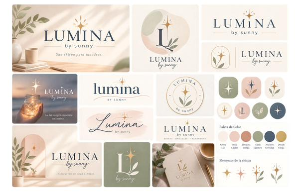
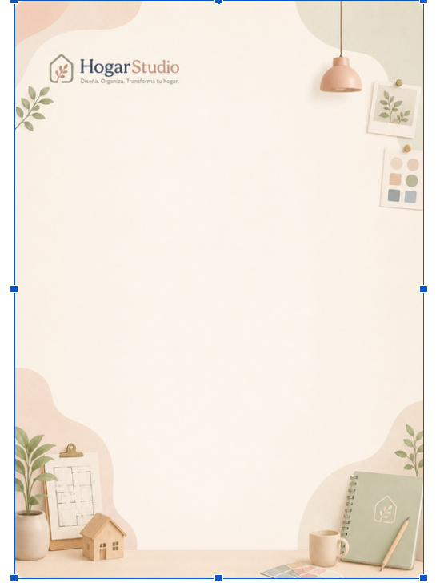
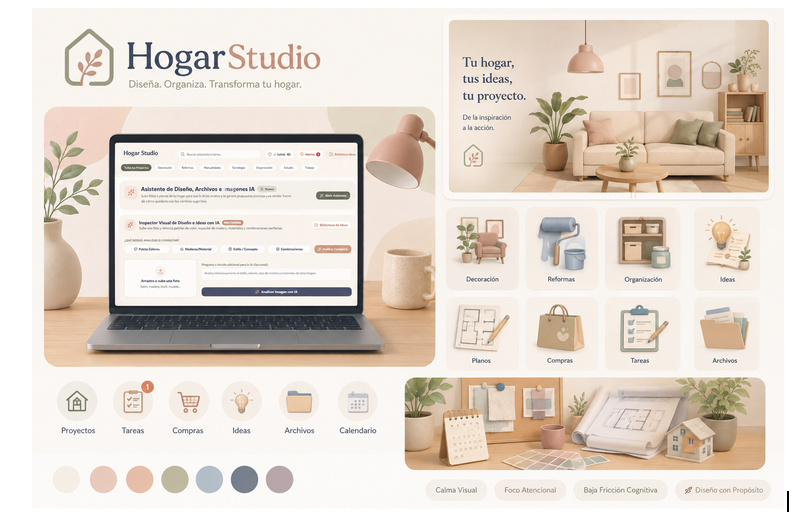

Propuesta de manual · versión alterna 1.0. Criterios cerrados de identidad, color, tipografía, imagen y componentes para LUMINA y Hogar Studio.
“Diseña. Organiza. Transforma tu hogar.”
REF #LUM-2026
SEPTIEMBRE 2026 · 8 SECCIONES
DOCUMENTO INTERNO DE MARCA
— sunny
Contenido
01 · ADN DE MARCA Y LOGOTIPO
05 · ELEMENTOS VISUALES
02 · VOZ Y TONO
06 · FOTOGRAFÍA
03 · COLORES
07 · ILUSTRACIÓN
04 · TIPOGRAFÍA
08 · COMPONENTES
Nota del editor de marca
Por qué esta es una propuesta “distinta”
Este documento no repite tal cual las notas de trabajo que ya existen en la carpeta del proyecto. Están leídas todas, y en varios puntos había opciones abiertas o contradicciones menores que aquí se cierran con un criterio único, para que el manual sirva de referencia final y no de lluvia de ideas. Los cambios de criterio más relevantes:
Jerarquía tipográfica cerrada — Fraunces se reserva para identidad y titulares (Logo, H1, H2). Nunca para párrafos largos: aporta carácter, no legibilidad de lectura continua.
Una sola versión del subtítulo — “by sunny” se resuelve en Manrope, no en manuscrita. La manuscrita (Caveat) queda como recurso decorativo excepcional —firmas, notas a mano—, nunca como parte fija del logotipo.
Regla de las 3 fuentes — Máximo 3 familias tipográficas activas en cualquier pieza. Fraunces + Manrope cubren el 95% de los casos; JetBrains Mono entra solo cuando hay una razón funcional (cotas, códigos, datos).
Cero negro puro — En ningún soporte de Lumina o Hogar Studio se usa negro puro (#000000). El azul grisáceo #3F4A63 hace de “tinta” en todo el sistema: es más cálido y coherente con la paleta pastel.
Ilustración con dos capas, no una — Se distinguen dos registros que en el material de origen a veces se mezclaban: ilustración 3D pastel (iconografía de producto, Hogar Studio) e ilustración lineal botánica (acentos editoriales en documentos). Ver sección 07.
Si alguno de estos cinco criterios no encaja con lo previsto, se puede reabrir: son decisiones de diseño, no dogmas. Pero si no se cierran, el sistema no funciona como sistema —vuelve a ser una carpeta de ideas sueltas.
Sección 01
ADN de marca & Logotipo
Qué es LUMINA
LUMINA es la marca madre; by sunny es la firma personal detrás de ella; Hogar Studio es el producto en el que esa marca se pone a trabajar. LUMINA no necesita explicar qué hace —el nombre ya carga una connotación emocional fuerte—, así que su función es sostener un universo visual construido alrededor de la luz: la chispa que enciende una idea antes de que se convierta en un proyecto de organización o reforma del hogar.
Territorio de marca: luz · creatividad · hogar · ideas · transformación · calma · belleza funcional. “A pesar de todo” se conserva como concepto interno —el espíritu con el que se afrontan los proyectos—, pero no se usa como eslogan comercial: tiene demasiada personalidad para gastarla debajo de un logotipo. El eslogan público es más simple y explica el producto en cinco palabras.
Los cuatro pilares de experiencia
Rigen cualquier decisión gráfica o tipográfica, desde una portada de dossier hasta un icono de la app de Hogar Studio.
01
Calma visual
Entornos limpios, paleta desaturada y respiración tipográfica amplia.
02
Foco atencional
Jerarquía clara que guía el ojo sin saturar ni generar fatiga visual.
03
Baja fricción cognitiva
Módulos ordenados, tablas intuitivas, iconos reconocibles al instante.
04
Diseño con propósito
Cada color, forma o bloque cumple una función comunicativa concreta.
El símbolo de la chispa (✦)
La chispa representa el destello de una idea y el toque humano detrás de cada proyecto. Sustituye al punto de la “I” en LUMINA y funciona también como recurso independiente —favicon, sello de documentos, icono de app—. Existen cuatro variaciones, cada una con una intención de uso distinta y ninguna intercambiable con las demás:
Chispa Clásica — estrella estilizada de cuatro puntas en Dorado Chispa #C9AD78. Encabezados principales, separadores de sección, acento sobre citas.
Chispa Botánica — la chispa se funde con una hoja en Salvia #A5AD8E y Terracota #C99579. Portadas de dossiers de jardinería, reformas orgánicas y decoración.
Monograma L — insignia circular con la letra “L”. Firmas de autoría, marcas de agua sobre imágenes de portada, isotipo para redes sociales.
Chispa Hogar Studio — la chispa se integra en el tejado de la casa-hoja de Hogar Studio. Co-branding, fichas de gestión de reformas, checklists y planos.
Logotipo: versiones y usos
Versión
Uso principal
No usar para
Lumina principal
Vertical, con la chispa en el punto de la “I”. Portadas, sellos, perfil social.
Cabeceras horizontales estrechas.
Lumina horizontal
Con “by sunny” alineado debajo o al lado. Membretes, pies de página, firmas de documento.
Espacios cuadrados o verticales.
Símbolo suelto ✦
Chispa aislada, cualquier variación. Favicon, icono de app, marca de agua, viñetas.
Comunicación que hable de LUMINA como marca madre.
Lumina + Hogar Studio
Firma compuesta de co-branding. Pie de página del producto, cierre de informes.
Como lockup único sin espacio de respiración entre ambos.
Reglas de construcción y espacio de seguridad
El margen de seguridad mínimo alrededor del logotipo equivale a la altura de la letra “U” de LUMINA, en cualquier aplicación.
Tamaño mínimo: 28 px de alto en pantalla o 12 mm en impresión; por debajo de eso, usar solo el símbolo ✦.
No estirar, inclinar, rotar ni añadir sombras o efectos 3D al wordmark: la personalidad la pone la tipografía, no el efecto.
No recolorear el logotipo fuera de las dos versiones autorizadas: Azul Grisáceo sobre fondo claro, o Blanco Cálido sobre fondo Azul Grisáceo/fotografía oscura.
Fondos permitidos: Crema, Blanco Cálido, fotografía con contraste suficiente. Fondos prohibidos: patrones botánicos a más del 15% de opacidad, fotografías oscuras sin overlay, cualquier color de la paleta de acento a plena saturación detrás del wordmark.

Fig. 1 · Sistema de logotipo: principal, horizontal, chispa suelta y Hogar Studio (referencia interna del proyecto).
Sección 02
Voz y tono
Esta sección faltaba en la numeración del material de origen (se pasaba de 01 a 03) y hace falta: sin una voz definida, la paleta y la tipografía sostienen la mitad del carácter de la marca y la otra mitad se improvisa en cada texto. La voz de LUMINA es la de alguien que ha ordenado ya muchas casas: tranquila, concreta y sin promesas grandilocuentes.
Serena, no blanda
Frases cortas, verbos claros. La calma se transmite con precisión, no con adjetivos.
Cercana, no coloquial
Tuteo siempre. Sin jerga de interiorismo ni exclamaciones de catálogo.
Útil, no aspiracional
Se explica el siguiente paso. Nada de “transforma tu vida”: se transforma un espacio.
✓ Así se escribe
· “Elige los acabados antes de pedir el mobiliario.” · “Tres decisiones y la cocina queda cerrada.” · “Guardamos tus muestras de color en el proyecto.”
✕ Así no
· “¡Descubre el hogar de tus sueños!” · “Soluciones integrales de habitabilidad.” · “Un espacio que habla de ti.”
Longitudes de referencia: titular hasta 6 palabras; subtítulo una frase; párrafo máximo 4 líneas; microcopia de interfaz en imperativo y sin punto final. La firma manuscrita (Caveat) es el único lugar donde la voz se permite ser personal, y aparece como máximo una vez por documento.
Sección 03
Colores
Siete colores, ni uno más: una base neutra cálida (Crema y Blanco Cálido), un color de identidad que hace de tinta en todo el sistema (Azul Grisáceo) y cuatro acentos con un trabajo específico cada uno (Salvia, Terracota, Rosa Empolvado, Dorado Chispa). El negro puro #000000 queda fuera del sistema por completo: el Azul Grisáceo lo sustituye en todo texto, icono o línea que en otra marca sería negra. Es más cálido, mantiene el contraste y no pelea con la estética pastel.
CREMA #F7F2EA
BLANCO #FFFDF9
AZUL GRIS. #3F4A63
SALVIA #A5AD8E
TERRACOTA #C99579
ROSA EMP. #D9B5A2
DORADO #C9AD78
Color
Uso principal
Uso secundario
No utilizar para
Crema #F7F2EA · LUZ
Fondo principal de cualquier documento o pantalla.
Fondo de tarjetas sobre fotografía clara.
Texto sobre Blanco Cálido (contraste insuficiente).
Blanco Cálido #FFFDF9 · BASE
Tarjetas y zonas de contenido sobre fondo Crema.
Fondo de tablas y formularios.
Fondos de pantalla completa (queda plano sin la Crema debajo).
Azul Grisáceo #3F4A63 · SERENIDAD
Texto principal, títulos y wordmark del logotipo.
Iconos de navegación, bordes sutiles, pies de página.
Bloques de fondo que superen el 40% de la página.
Salvia #A5AD8E · EQUILIBRIO
Acentos botánicos, badges de estado, tarjetas de proyecto.
Fondos orgánicos suaves, iconos de tarea completada.
Texto pequeño sobre fondo Crema: revisar siempre el contraste WCAG.
Iconos de reformas, llamadas a la acción, promociones.
Cuerpo de texto de un párrafo largo.
Rosa Empolvado #D9B5A2 · CALIDEZ
Formas orgánicas de fondo, ilustraciones complementarias.
Separadores visuales, etiquetas secundarias.
Elementos técnicos que requieran alta legibilidad.
Dorado Chispa #C9AD78 · CHISPA
Símbolo ✦, iconos de ideas, detalles de marca premium.
Citas destacadas, marcas de agua, apliques decorativos.
Bloques grandes de texto.
Reglas de combinación
Base neutra siempre presente: Crema o Blanco Cálido ocupan como mínimo el 55-60% de cualquier composición. El color aquí orienta, no rellena.
Máximo dos acentos por vista o página. Si Salvia domina, Terracota o Dorado Chispa apoyan; nunca los tres acentos cálidos a la vez compitiendo por atención.
El Azul Grisáceo es el único color autorizado para texto de lectura larga; los acentos se reservan para títulos cortos, iconos, badges y detalles.
Antes de dar por buena una combinación texto/fondo, comprobar el contraste WCAG AA —en concreto Salvia y Rosa Empolvado fallan con texto pequeño sobre Crema.
En Hogar Studio (producto), Salvia = “completado/avance” y Terracota = “prioridad/atención”. No se intercambian entre sí en ningún estado de interfaz.
Sección 04
Tipografía
Tres fuentes, tres trabajos distintos, y una regla que no se negocia: nunca más de tres familias tipográficas activas en la misma pieza. En la práctica, el 95% de cualquier documento se resuelve solo con Fraunces + Manrope; JetBrains Mono entra únicamente cuando hay una razón funcional —una cota, un código, un dato técnico—, nunca por decoración.
FRAUNCES
Lumina
La chispa · la imaginación
Editorial, artesanal, con carácter. Solo para identidad y titulares: Logo, H1, H2. Nunca en párrafos.
MANROPE
Organiza tu hogar
El orden · la claridad · la acción
Legible, contemporánea, neutra. Cuerpo de texto, navegación, botones, etiquetas: hace casi todo el trabajo.
JETBRAINS MONO
80×80 cm #3F4A63
Cotas · códigos · metadatos
Monoespaciada, técnica. Solo para badges, referencias, tablas de datos y medidas. Uso funcional, no ornamental.
Tabla de jerarquía
Uso
Fuente
Peso
Tamaño orientativo
Logo LUMINA
Fraunces
600 SemiBold
28–36 pt
“by sunny”
Manrope
400–500
11–13 pt
Hogar Studio
Manrope
700 Bold
16–18 pt
Título / H1
Fraunces
600
22–24 pt
H2
Fraunces
500–600
17–19 pt
H3
Manrope
700
13–15 pt
Texto normal
Manrope
400
10,5–11,5 pt
Texto destacado
Manrope
500
11–12 pt
Botones
Manrope
600–700
10–11 pt
Etiquetas / categorías
Manrope
600
9–10 pt
Datos / cotas / códigos
JetBrains Mono
400–500
9–10 pt
Firma decorativa (excepcional)
Caveat
500
14–16 pt
Cómo se leen estas reglas en el día a día
Si dudas entre Fraunces o Manrope para un texto, pregúntate si alguien lo va a leer de corrido. Si la respuesta es sí, es Manrope.
JetBrains Mono no es “la fuente de los números” en general: un precio en una tarjeta va en Manrope. JetBrains Mono es para datos técnicos verificables —medidas, referencias, códigos de color.
Caveat (manuscrita) no forma parte del logotipo ni de ningún encabezado. Es un recurso opcional para una firma personal o una nota manuscrita, y aparece como máximo una vez por documento: — sunny
Sección 05
Elementos visuales
Más allá del logotipo, LUMINA se apoya en un vocabulario reducido de formas: la chispa, curvas orgánicas, un motivo botánico puntual y texturas suaves. Todos comparten la misma regla, no escrita en el material original pero evidente en cuanto se mira: son acentos, nunca protagonistas. Si un elemento visual compite con el contenido por la atención, sobra.
Chispa (✦)
Ya descrita en la sección 01 como símbolo de marca. Aquí se usa además como micro-recurso gráfico: separador de sección (línea fina + chispa + línea fina), viñeta de lista en documentos editoriales y acento sobre citas. Nunca a más de un tamaño destacado por página.
Formas orgánicas
Manchas y curvas de bordes redondeados, sin esquinas rectas, en tonos Rosa Empolvado, Crema o Salvia a baja saturación. Se usan como fondo decorativo en esquinas de portadas y membretes —nunca detrás de bloques de texto extensos, donde reducirían la legibilidad.
Portadas y cabeceras de documento: una o dos formas por esquina, máximo el 20% de la superficie.
Tarjetas de producto en Hogar Studio: forma orgánica sutil como fondo de icono, no de todo el módulo.
Motivo botánico (hojas)
Una rama u hoja lineal, dibujada en trazo fino, es el acento botánico de la marca. Aparece junto al logotipo en composiciones especiales, como ilustración de apoyo en las esquinas de fondos documentales y como parte de la Chispa Botánica. No se usa como patrón repetido a gran escala: eso es del terreno de las texturas, no de la ilustración de acento.
Texturas y fondos
Fondo documental pastel — Base neutra, sin patrón, en Crema o Blanco Cálido. El 90% de las páginas de texto deberían usar este fondo.
Fondo portada · curvas orgánicas — Combina formas orgánicas de fondo con el logotipo o el símbolo suelto. Reservado a portadas y separadores de sección.
Patrón botánico suave — Motivo botánico repetido a opacidad muy baja (10-15%). Solo en separadores de capítulo o contraportadas; jamás detrás de texto de lectura.
✓ Hacer
· Reservar formas y texturas a portadas, separadores y esquinas. · Mantener la opacidad de cualquier patrón por debajo del 15% si hay texto cerca. · Usar un único acento gráfico dominante por composición.
✕ Evitar
· Patrones botánicos a plena opacidad detrás de párrafos. · Mezclar chispa + formas orgánicas + textura botánica en la misma esquina. · Formas orgánicas en colores saturados fuera de la paleta.
Sección 06
Fotografía
La fotografía de LUMINA y Hogar Studio no vende un estilo de vida aspiracional de revista: documenta el proceso real de diseñar y organizar un hogar. Dos familias de imagen cubren todos los casos: bodegones de escritorio y ambientes interiores cálidos.
Qué fotografiar
Bodegones de proyecto — Composiciones de mesa de trabajo con planos, maqueta de casa de madera, cuaderno, muestras de color, taza de café, planta en maceta. Es la imagen “de marca” por excelencia: transmite proceso creativo y orden a la vez.
Interiores cálidos — Salones y estancias reales con luz natural, mobiliario neutro, plantas y textiles en la paleta de marca. Documentan el resultado, no el proceso.
Materiales y texturas naturales — Madera, lino, cerámica, terracota: primeros planos que refuerzan la sensación táctil y artesanal de la marca.
Cómo debe verse
✓ Buscar
· Luz natural cálida, nunca fluorescente o azulada. · Composición despejada, con espacio para respirar. · Paleta coherente con la marca dentro de la propia foto. · Objetos y texturas reales: madera, lino, cerámica, papel.
✕ Evitar
· Fotografía de stock corporativo (oficinas, apretones de manos). · Luz fría, neón o flash directo con sombras duras. · Composiciones recargadas o desordenadas. · Colores saturados fuera de la paleta de marca.

Fig. 2 · Membrete Hogar Studio con bodegón de esquina: planos, maceta, cuaderno y maqueta de casa (referencia interna).
La fotografía entra recortada en las esquinas, nunca a sangre completa detrás del texto, y la mancha orgánica hace de transición entre foto y papel.
Sección 07
Ilustración
El material de referencia mezclaba, sin decirlo del todo, dos registros de ilustración distintos. Aquí quedan separados porque cumplen funciones distintas y no deberían convivir en la misma pieza.
Registro 1 · Iconografía 3D pastel (producto)
Renders suaves en 3D, con luz cenital suave desde arriba a la izquierda, bordes redondeados, materiales mate (nunca brillantes o plásticos) y paleta limitada a los siete colores de marca. Es el lenguaje de la interfaz de Hogar Studio: decoración, reformas, organización, ideas, planos, compras, tareas, archivos, calendario.
✓ Mantener
· Luz suave y consistente en todos los iconos de un mismo set. · Formas redondeadas, sin aristas vivas. · Materiales mate dentro de la paleta de marca.
✕ Evitar
· Iconos planos tipo clipart corporativo. · Gradientes neón o efectos de plástico brillante. · Mezclar iconos 3D con iconos de línea en el mismo set.
Registro 2 · Línea botánica (editorial)
Trazo fino, monocromo (Azul Grisáceo o Dorado Chispa), una sola hoja o rama por composición. Se usa como acento en documentos, portadas y separadores —nunca en la interfaz de producto, que pertenece al registro 3D. Mezclar ambos registros en la misma pieza es la forma más rápida de que el sistema deje de parecer un sistema.

Fig. 3 · Set de iconos 3D pastel de Hogar Studio: decoración, reformas, organización, ideas, planos, compras, tareas, archivos (referencia interna).
Sección 08
Componentes
Doce piezas cubren prácticamente cualquier documento o pantalla de LUMINA y Hogar Studio. No son plantillas cerradas sino reglas de construcción con un ejemplo aplicado; el criterio para añadir un componente nuevo al sistema es que se repita en al menos tres documentos distintos —si no, es un caso puntual y no merece entrar aquí.
Componente 1 · Título y subtítulo
Transforma tu espacio con calma
Guía paso a paso para la selección de materiales y distribución.
Título en Fraunces 600, subtítulo en Manrope 500 en Terracota. El subtítulo nunca repite literalmente el título: añade contexto o la acción siguiente.
Componente 2 · Párrafo base
El diseño consciente no busca recargar las estancias, sino despejar la mente. A través de la iluminación natural y los materiales nobles, creamos hogares funcionales que celebran lo esencial.
Manrope 400, interlineado generoso (1.4-1.5). Máximo 75 caracteres por línea para no perder la sensación de calma visual.
Componente 3 · Tarjeta (card)
PROYECTO ACTIVO✦ Hogar Studio
Remodelación cocina Salvia
Selección de acabados mate, madera clara y detalles cerámicos cálidos.
Fondo Crema sobre Blanco Cálido, esquinas redondeadas, etiqueta de estado a la izquierda y firma de marca a la derecha.
Componente 4 · Caja de cita
✦
“La luz siempre encuentra un camino para inspirar.”
— LUMINA INSPIRATIONS
Fondo Rosa Empolvado al 20% de opacidad, texto centrado en Fraunces cursiva, atribución en JetBrains Mono.
Componente 5 · Caja de aviso (alert)
✦Nota de diseño: asegura mantener un margen libre equivalente a la altura de la letra “U” alrededor del logotipo.
Borde izquierdo grueso en Salvia, fondo Salvia al 15%. Se reserva para advertencias de uso de marca, nunca para errores críticos de producto (esos usan un color de alerta específico fuera de esta paleta).
Componente 6 · Separador decorativo
✦
Línea fina en Azul Grisáceo al 20% de opacidad, interrumpida por la chispa en Dorado. Marca el cambio de sección dentro de un mismo documento.
Componente 7 · Etiquetas (badges)
REFORMADECORACIÓNTAREA PENDIENTE
Mayúsculas, JetBrains Mono, siempre en cápsula. El color de fondo comunica la categoría (Salvia, Terracota) o el estado neutro (Crema con borde).
Componente 8 · Botones de acción
PRIMARIOSECUNDARIOOUTLINE
Primario en Azul Grisáceo para la acción principal de la pantalla; Secundario en Salvia para acciones de apoyo; Outline para acciones reversibles o de menor peso. Nunca más de un botón primario visible a la vez.
Componente 9 · Ficha técnica modular
REF_PROYECTO: #LUM-2026ESTADO: APROBADO
SUPERFICIE
85 m² útiles
PALETA SUGERIDA
Crema, Salvia y Terracota
TIEMPO ESTIMADO
4 semanas
Fondo Crema, cabecera con referencia y estado, cuerpo en columnas de datos breves. Es el componente que sostiene las fichas de proyecto de Hogar Studio.
Componente 10 · Tabla de datos
Categoría
Material / acabado
Ubicación
OK
Pavimento
Madera de roble clara
Salón y pasillos
✓
Pintura
Mate Crema #F7F2EA
Toda la vivienda
✓
Cabecera en Azul Grisáceo con texto Blanco Cálido; filas alternando Blanco Cálido y Crema para facilitar el escaneo sin usar líneas de rejilla pesadas.
Componente 11 · Estructura de portada
✦
Nombre del proyecto
Ficha técnica · Hogar Studio
REF #LUM-2026 · SEPTIEMBRE 2026
Chispa centrada arriba, título en Fraunces, subtítulo de contexto en Terracota, referencia técnica en JetBrains Mono al pie. Fondo Crema o forma orgánica sutil en una esquina.
El logotipo completo (con “by sunny”) solo aparece en portadas de comunicación de marca; las fichas de proyecto de Hogar Studio usan el isotipo casa-hoja.
Componente 12 · Pie de página
✦ LUMINA · Hogar StudioPágina 1 de 8
Firma compuesta Lumina + Hogar Studio a la izquierda, numeración a la derecha, todo en JetBrains Mono a bajo contraste. Aparece en todo documento de más de una página; se omite en portadas.
✦ LUMINA · {{ footerLabel }}Propuesta 1.0 · Septiembre 2026